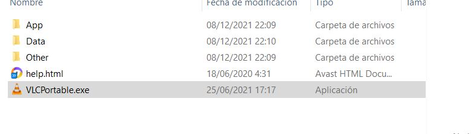
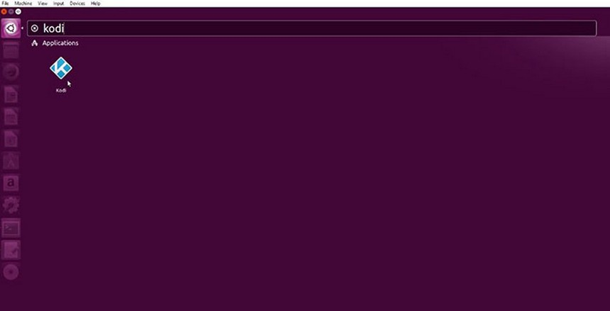

La descarga de un software portable es muy sencilla solo nos tendriamos que ir a la página pra descargarlo , que la dejo pinchando en la imagen. Una vez aqui descargamos el archivo portable.
Una vez ya descargado , ya podríamos pasar los archivos al pen drive y poder ver cualquier video con VLC en cualquier lado .
En la terminal, escribe el siguiente comando y pulsa Enter:sudo apt-get install software-properties-common. Se te pedirá la contraseña de usuario root. Introdúcela Seguidamente introduce este comando: sudo add-apt-repository ppa:team-xbmc/ppa
Seguidamente, introduce el siguiente comando para actualizar los repositorios que has agregado: sudo apt-get update Ahora introduce el siguiente comando para instalar Kodi: sudo apt-get install kodi Se te preguntará si quieres continuar con la instalación de Kodi. Escribe Y y pulsa Enter para aceptar. Al aceptar, Kodi se descargará y se instalará en tus sistema. Puede que tarde unos minutos, dependiendo de tu conexión a internet. Cuando el proceso termine, cierra la Terminal.